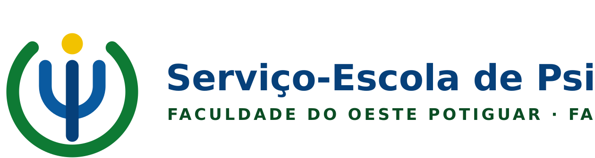
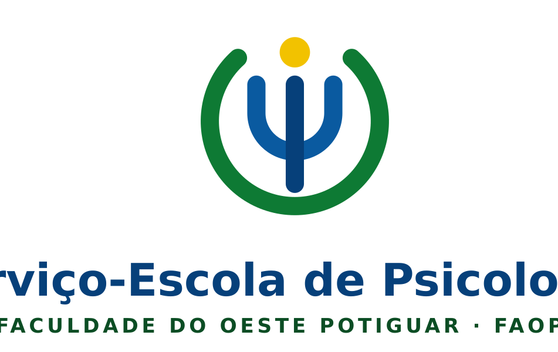
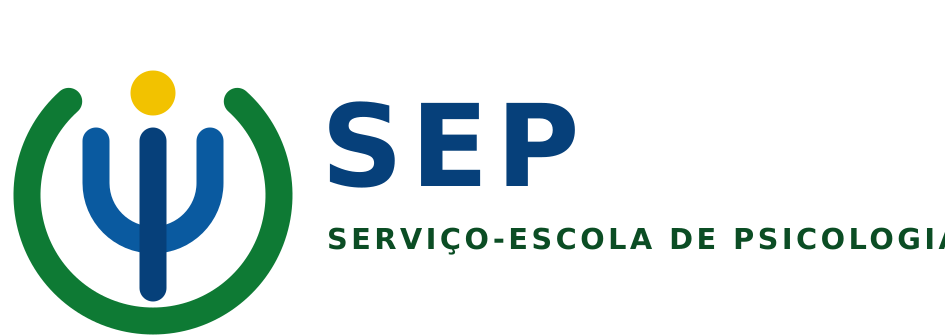
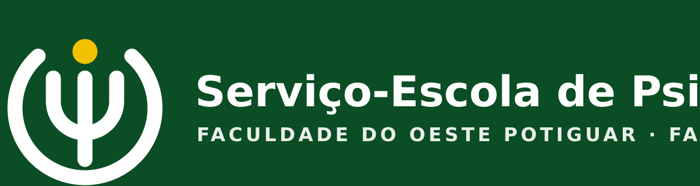
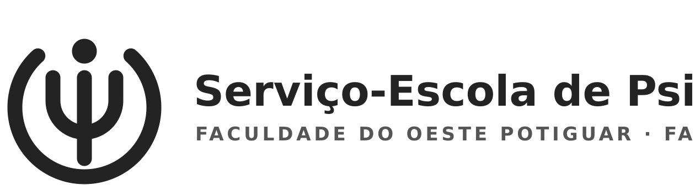
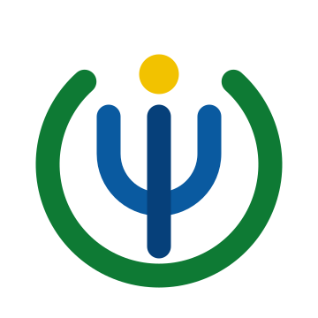
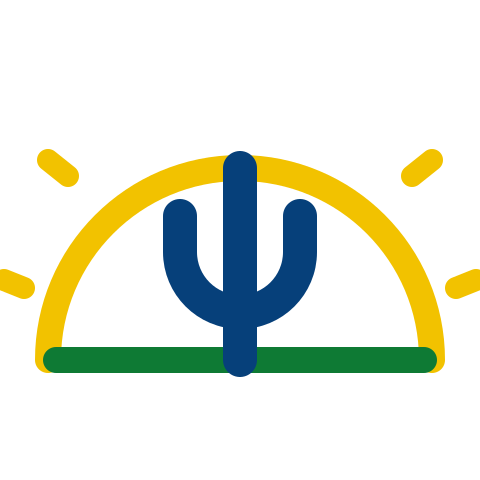
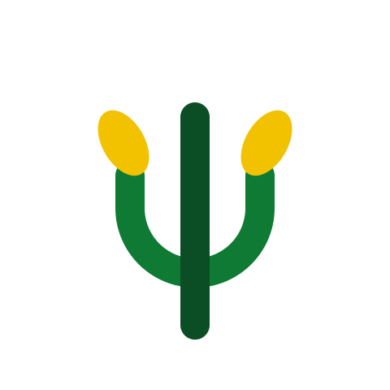

Serviço-Escola de Psicologia · Faculdade do Oeste Potiguar — FAOP
Complemento visual do Projeto de Marca · 2026.2 · minuta para aprovação
O conceito
O símbolo funde o Ψ (psi) — símbolo universal e profissional da Psicologia — a dois valores declarados
da FAOP no PPC 2025: o Docente e o Estudante. São os dois únicos valores institucionais que nomeiam pessoas, e são
exatamente as duas figuras que sustentam um serviço-escola.
Como o símbolo é lido
O anel verde aberto — a supervisão docente e o abrigo institucional da FAOP. Envolve sem fechar:
abriga, mas não aprisiona. O verde é a cor-mãe da instituição.
O arco azul interno — o estagiário que escuta. Azul é a cor-âncora do SEP.
A haste central — a pessoa atendida, no centro de tudo, atravessando as duas camadas de cuidado.
O ponto dourado — ocupa exatamente a abertura do anel. É a singularidade de cada pessoa e o dourado
do sol nascente do brasão da FAOP. A abertura no topo diz que o serviço tem porta de entrada.
Por que funciona
É inequivocamente um Ψ — não exige explicação para quem é da área.
É também uma figura humana acolhida por dois arcos — não exige explicação para quem não é.
Traduz visualmente a frase da plataforma de marca: “Aqui, ninguém escuta sozinho.”
Usa apenas as cores do brasão da FAOP. Não inventa nada fora do sistema institucional.
Geometria pura: arcos e uma reta. Reproduz em bordado, adesivo recortado, carimbo e cópia P&B.
Coerência com o Projeto de Marca. O documento principal veda cruz, caduceu, estetoscópio, cérebro, lâmpada e
peça de quebra-cabeça. O Ψ não está entre os vetados — é o símbolo próprio da profissão, e não um empréstimo
da Medicina nem um clichê de campanha. O uso aqui é deliberado e consistente com aquela regra.
Assinatura principal

Horizontal — uso preferencial
SEP-assinatura-horizontal.svg / .png
É a versão padrão. Deve ser usada sempre que houver largura disponível: cabeçalho de documento, ofício, placa,
folder, apresentação, rodapé de e-mail.
Versões

Vertical / centralizada
SEP-assinatura-vertical

Reduzida — crachá, carimbo, selo
SEP-assinatura-reduzida

Negativa — fundo escuro
SEP-assinatura-negativa

Monocromática — P&B, carimbo
SEP-assinatura-monocromatica

Símbolo isolado
SEP-simbolo-cor

Símbolo negativo
SEP-simbolo-negativo-sem-fundo
Quando usar o símbolo isolado. Apenas em suportes onde a assinatura completa já apareceu ou
onde o contexto institucional é evidente: favicon, avatar, carimbo, marca d'água, adesivo de porta, verso de crachá.
Em peça de captação, nunca use o símbolo sozinho — o endosso FAOP tem de estar visível.
Cores
Verde FAOP#0E7A34 anel — supervisão
Azul SEP#0A5AA0 arco — estagiário
Azul escuro#06407A haste e nome
Dourado FAOP#F2C200 ponto
Verde escuro#0B4D24 endosso e fundo negativo
Grafite#232323 versão monocromática
Construção e reduções
Parâmetro
Valor
Observação
Grade do símbolo
120 × 120 unidades
Anel: centro (60,62), raio 42, abertura de 84° no topo
Sem fonte comprada — reproduzível no Word e no Canva
25 mm15 mm10 mm — mínimo6 mm — não usar
Usos incorretos
Nunca
Fechar o anel verde — a abertura é o conceito, não um defeito de desenho
Remover ou recolorir o ponto dourado
Trocar as cores entre anel, arco e haste
Distorcer, inclinar, aplicar sombra, contorno ou gradiente
Alterar a espessura relativa dos traços
Também nunca
Usar a assinatura sem o endosso “Faculdade do Oeste Potiguar — FAOP”
Aplicar sobre fotografia sem tarja sólida
Recriar o texto em fonte serifada, condensada ou script
Acrescentar cruz, caduceu, cérebro, laço de campanha ou qualquer elemento ao símbolo
Usar o símbolo isolado em peça de captação de usuários
Conceitos alternativos avaliados
Registrados para o colegiado, caso se prefira outro caminho. Ambos partem do mesmo Ψ.

A · Aurora
Ψ sobre a linha do horizonte, dentro do
sol nascente do brasão. Liga-se ao desenvolvimento regional e ao valor Criatividade e Inovação.
Mais literal em relação ao brasão, porém tem mais elementos e leitura mais frágil em tamanhos pequenos.

B · Broto
Ψ cujas hastes brotam em folhas, evocando
o algodão e o milho do brasão. Liga-se ao valor Estudante e à formação. É o mais simples, mas o menos
distintivo — aproxima-se de marcas de bem-estar e fitoterapia.
★ Recomendado · Escuta compartilhada
Único que traduz a tese central do
projeto de marca — a supervisão como argumento, não como ressalva — e o único que se mantém legível a 10 mm e em
monocromia.
SVG é o arquivo-fonte. Use sempre o SVG quando o programa aceitar (Word, PowerPoint, Canva,
Illustrator, Inkscape, gráfica) — ele não perde qualidade em nenhuma ampliação. O PNG tem fundo transparente e serve
para uso rápido em tela. Nas peças impressas, exija do fornecedor a saída a partir do SVG.